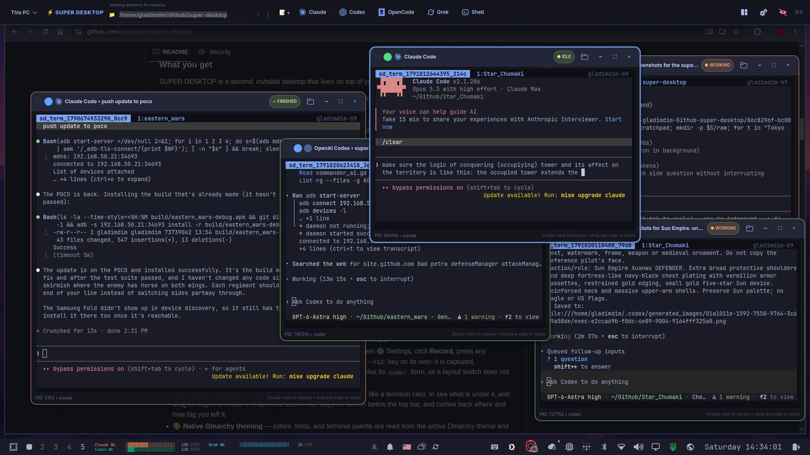
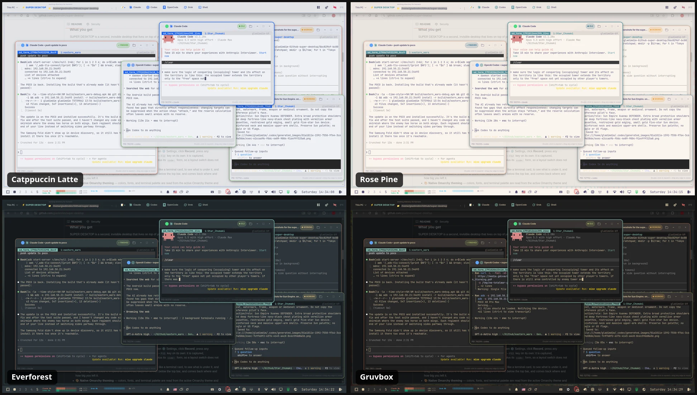

Every AI agent.
One shortcut away.
A hidden workspace for Omarchy. Your coding agents live in it, on every PC, and in your pocket.
Omarchy Linux · Android app · iPhone in development · No accounts, no servers
A live simulation of the app, running in your browser. Agents and their output are sample data. Tip: Shift + Q toggles it.It is easiest to try on a bigger screen; the sections below also have real recordings.
One shortcut
Over anything. Gone in a blink.
Press SUPER SHIFT Q. Your agents slide in over whatever you are doing.
Press it again to hide them. They keep running.
Every harness
Click a logo. An agent starts.
Every coding agent on your PC gets a launcher in the top bar.
Each one runs in its own live terminal, in the folder you picked. Type right into it.
Click a launcher in the top bar, then type into the new card.
Real recording: a prompt typed into a live Claude Code session.
Live cards
Your agents, laid out like windows.
Drag, resize, expand, minimize. Arrange tiles them all in one click.
Each card says if its agent is working or finished.


The real app: Claude Code and Codex cards, finished, idle and working.
Press Arrange (top right), drag a card, or double-click its title.
Android app
Your agents, in your pocket.
Every session on your PC shows up on your phone. Type on the phone; it runs on the PC.
Get an alert when an agent finishes. Send it pictures and files.
Android is out now. iPhone is in development. Connect your phone →
This PC, live.
Tap a session on the phone and send a prompt. Watch the card on the PC.
Real recording: the Android app on an unfolded Galaxy Z Fold.
All your PCs
Open another PC’s agents from here.
Pair your computers once. Every other PC is a click away in the This PC menu.
Type into a remote card. It runs on that machine.
Open the “This PC” menu (top left) and pick studio-pc.
Real recording: a second, paired PC opened over the local network.
Omarchy themes
It wears your theme.
Colors and fonts follow your Omarchy theme, and change the moment it does.
Pick a theme. Every demo on this page follows it.

The real app in four Omarchy themes.
For agents
Agents can drive it too.
A command line lets other agents list, launch, watch and arrange sessions.
Built-in help explains every command. Every change is safe to retry.
Private by design.
Your PCs and phones talk to each other directly. Nothing sits in between.
No accounts
Nothing to sign up for. No cloud.
Direct and encrypted
Over your own network or Tailscale.
You approve each device
The same code shows on both screens first.
The whole tour, in 40 seconds.
Recorded on a real desktop: the shortcut, a live agent, a phone and a second PC.
Install in one line.
On Omarchy (Arch Linux with Hyprland), as your normal user.
curl -fsSL https://raw.githubusercontent.com/gladimdim/super-desktop/master/install.sh | bash- Run the command. It sets up everything and builds the newest release.
- Press SUPER SHIFT Q.
- Click an agent you have installed.
Update, or install a specific release
Run the same command again to update to the newest release. Your settings, notes and running agents stay. To match an older phone app, pick a release:
curl -fsSL https://raw.githubusercontent.com/gladimdim/super-desktop/master/install.sh | SUPER_DESKTOP_VERSION=v1.2.0 bashAll releases: GitHub releases. Prerequisites and troubleshooting: installation guide.